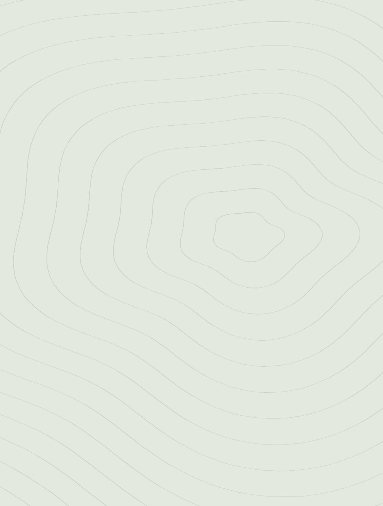
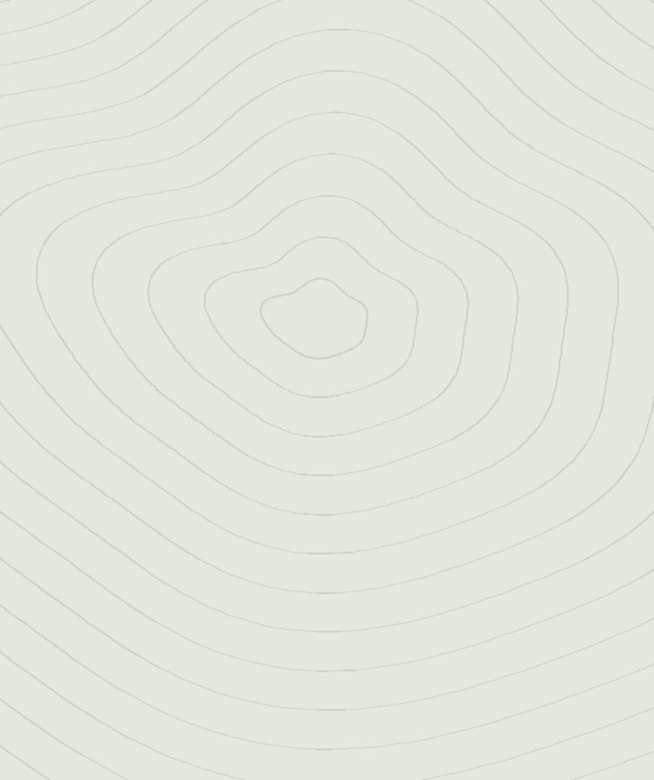
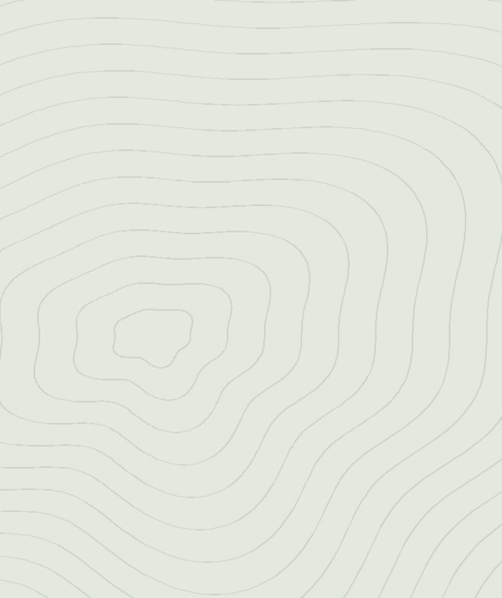
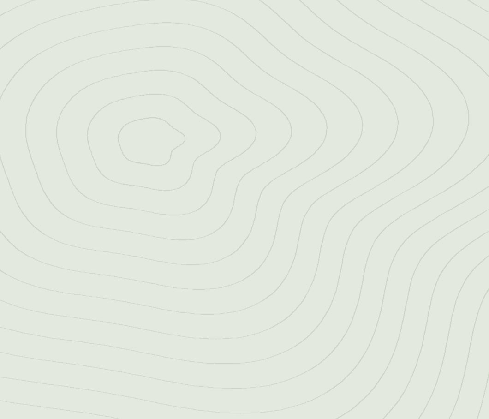
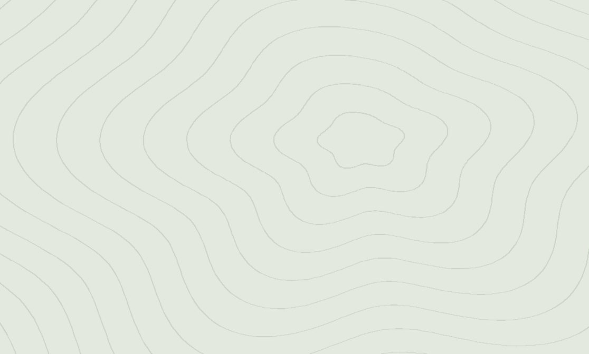
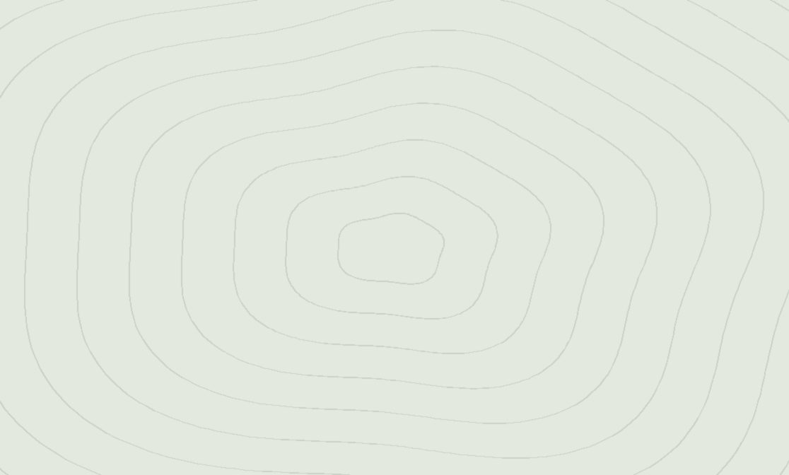
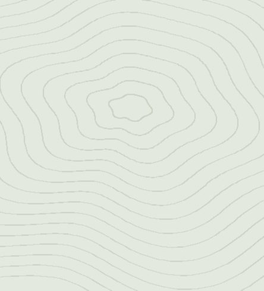

통증 치료
만성 통증을 줄이고 하루가 편해지도록 합니다.

1,200분+
통증 치료를 받고 일상으로 돌아가신 분들입니다.
40개 과정
부위와 상태에 맞춰 짜 둔 치료 프로그램입니다.
90% 호전
계획대로 마치신 분들의 통증 감소 비율입니다.
통증을 덜어 내고 관절이 움직이는 범위를 넓혀, 스스로 버틸 힘이 돌아오도록 돕습니다.
아픈 자리를 먼저 가라앉힙니다
굳은 관절을 천천히 풉니다
돌아오지 않게 붙잡습니다
만성 통증을 줄이고 하루가 편해지도록 합니다.
움직이는 범위를 넓히고 몸이 부드러워지게 합니다.
다친 뒤 안전하게 원래대로 돌아가도록 돕습니다.
버티는 힘을 길러 몸의 균형을 잡습니다.
오래 걸리는 회복을 끝까지 함께 봅니다.
틀어진 자세를 바로잡아 부담을 덜어 냅니다.

재활의학과 · 도수치료 14년
정형외과 · 스포츠 손상

운동처방 · 자세 교정
처음부터 끝까지 같은 사람이 봅니다. 매번 설명을 다시 하지 않으셔도 됩니다.
같은 부위라도 원인이 다릅니다. 검사 결과에 맞춰 계획을 새로 짭니다.
회차마다 가동 범위와 통증을 적어 두고 함께 보면서 조정합니다.
언제부터 어디가 아팠는지, 어떤 자세에서 심해지는지 먼저 듣습니다. 이십 분 정도 걸립니다.
가동 범위와 근력, 자세를 재서 지금 상태를 숫자로 남깁니다. 나중에 비교할 기준이 됩니다.
검사에 맞춰 치료 계획을 짜고, 회차마다 반응을 보면서 강도를 조정합니다.
끝난 뒤에도 집에서 할 운동을 정해 드리고, 한 달 뒤에 한 번 더 확인합니다.
삼 년 된 허리 통증이었습니다. 여덟 번 만에 앉아 있는 게 편해졌고, 지금은 일하는 데 지장이 없습니다.
매번 같은 선생님이 봐 주셔서 설명을 다시 할 일이 없었습니다. 기록을 같이 보며 조정하는 게 믿음이 갔습니다.
끝나고 나서 집에서 할 운동을 정해 주신 게 좋았습니다. 한 달 뒤 확인까지 해 주셔서 마음이 놓였습니다.

잘못 누우면 밤새 더 굳습니다. 상태별로 편한 자세를 정리했습니다.

하루 오 분이면 됩니다. 순서와 횟수를 그대로 따라 하시면 됩니다.

의자 높이와 모니터 위치만 바꿔도 부담이 줄어듭니다.
가능하지만 대기가 길어질 수 있습니다. 전화나 네이버 예약으로 시간을 잡아 두시면 바로 진료합니다.
상담과 검사를 합쳐 사십 분에서 한 시간 정도 봅니다. 이후 치료는 회차당 삼십 분 안팎입니다.
항목에 따라 다릅니다. 상담 때 적용 여부와 금액을 먼저 안내해 드립니다.
상태에 따라 다르지만 보통 팔에서 열두 회입니다. 검사 결과를 보고 첫날 말씀드립니다.
건물 지하에 두 시간 무료 주차가 됩니다. 접수처에 차량 번호를 알려 주시면 됩니다.
